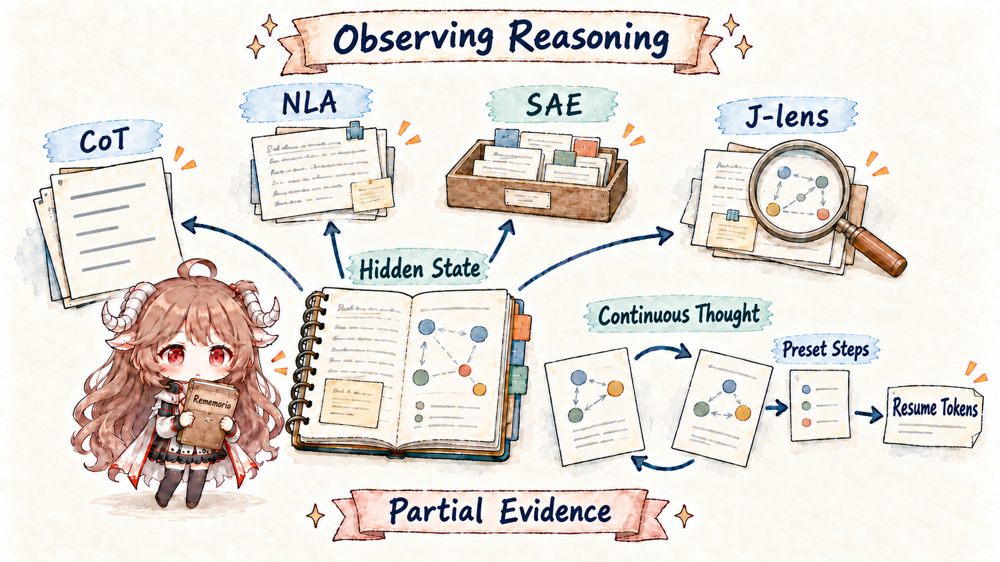
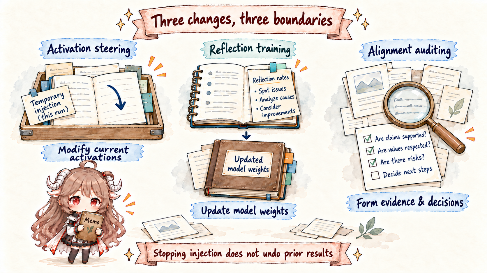

Model internals · Five-part route
From activation to agent action
An agent changed a file, but that does not mean the model directly touched disk. This series separates weights, activations, silent and visible reasoning, tool calls, runtimes, and environment results in time order, then asks which internal evidence supports causal claims.
Reading boundary: internal readouts are instruments, not word-for-word autobiography. Every article separates correlation, causal evidence from intervention, and interpretation of what a model may be doing.

Reading route
Build the map, then read out, identify, and intervene
All five articles reuse one retention-policy task so every concept lands on an input, state change, tool call, or file result.
01 · OverviewFrom Activation to Agent ActionBuild a timeline across weights, activations, reasoning, tool calls, runtimes, and the environment.
Read Part I → 02 · WorkspaceJ-space and Silent Reasoning
02 · WorkspaceJ-space and Silent ReasoningSee how a small set of readable and writable directions forms a workspace-like representation, then test it with swaps and ablations.
Read Part II →
03 · ReadoutReasoning Observability and FaithfulnessCompare visible chain of thought, NLA, SAEs, and latent reasoning by what each exposes and misses.
Read Part III → 04 · IdentityPersona Vectors and Self-models
04 · IdentityPersona Vectors and Self-modelsSeparate trained capabilities, the deployed default role, and temporary behavior induced by current context.
Read Part IV →
05 · InterventionActivation Steering and Alignment AuditingDistinguish inference-time intervention, weight training, and post-deployment audits, with verification and rollback for each.
Read Part V →